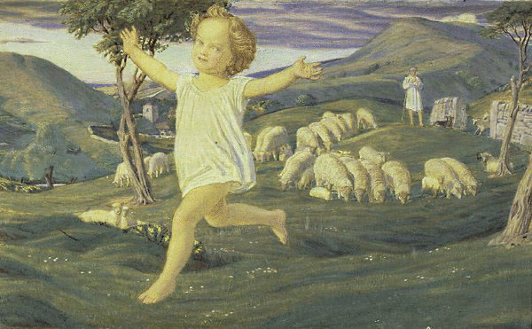
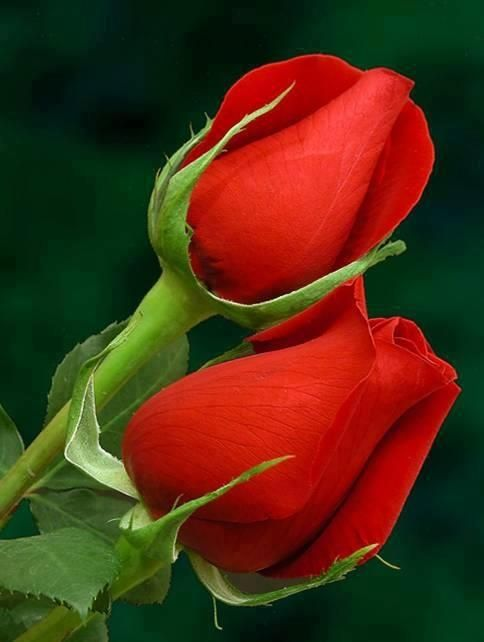
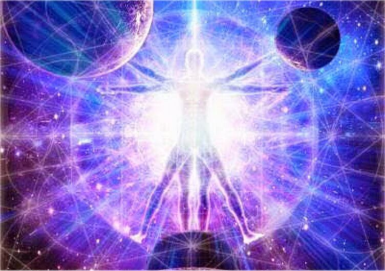

[1]
The Vietnamese German University
Foundation Year
English for Computer Science
William Blake (November 28th, 1757 – August 12th, 1827) was an English poet, painter, and printmaker.
Largely unrecognised during his lifetime, Blake is now considered a seminal figure in the history of the poetry and visual arts of the Romantic Age.
His prophetic works have been said to form "what is in proportion to its merits the least read body of poetry in the English language".
His visual artistry led one contemporary art critic to proclaim him "far and away the greatest artist Britain has ever produced".
In 2002, Blake was placed at number 38 in the BBC's poll of the 100 Greatest Britons.
Although he lived in London his entire life (except for three years spent in Felpham), he produced a diverse and symbolically rich œuvre, which embraced the imagination as "the body of God" or "human existence itself".
Although Blake was considered mad by contemporaries for his idiosyncratic views, he is held in high regard by later critics for his expressiveness and creativity, and for the philosophical and mystical undercurrents within his work.
His paintings and poetry have been characterised as part of the Romantic movement and as "Pre-Romantic".
Reverent of the Bible but hostile to the Church of England (indeed, to almost all forms of organised religion), Blake was influenced by the ideals and ambitions of the French and American Revolutions.
Though later he rejected many of these political beliefs, he maintained an amiable relationship with the political activist Thomas Paine; he was also influenced by thinkers such as Emanuel Swedenborg.
Despite these known influences, the singularity of Blake's work makes him difficult to classify.
The 19th-century scholar William Rossetti characterised him as a "glorious luminary", and "a man not forestalled by predecessors, nor to be classed with contemporaries, nor to be replaced by known or readily surmisable successors". [2]
List of Emily Dickinson's poems:
Return to home pageI have no name
I am but two days old.—
What shall I call thee?
I happy am
Joy is my name,—
Sweet joy befall thee!
Pretty joy!
Sweet joy but two days old,
Sweet joy I call thee;
Thou dost smile.
I sing the while
Sweet joy befall thee.
By William Blake [3]

[4]
Return to top
Return to home page
A flower was offered to me,
Such a flower as May never bore;
But I said 'I've a pretty rose tree,'
And I passed the sweet flower o'er.
Then I went to my pretty rose tree,
To tend her by day and by night;
But my rose turned away with jealousy,
And her thorns were my only delight.
By William Blake [5]

[6]
Return to top
Return to home page
Cruelty has a Human Heart
And Jealousy a Human Face
Terror the Human Form Divine
And Secrecy, the Human Dress
The Human Dress, is forged Iron
The Human Form, a fiery Forge.
The Human Face, a Furnace seal'd
The Human Heart, its hungry Gorge.
By William Blake [7]

[8]
Return to top
Return to home page
References
[1] Photograph of William Blake (1807). Retrieved 4th December 2016 from www.wikipedia.org
[2] Biography of William Blake. Retrieved 4th December 2016 from www.wikipedia.org
[3] Infant Joy. Retrieved 4th December 2016 from www.poetryfoundation.org
[4] Infant Image. Retrieved 4th December 2016 from http://www.onlinegalleries.com/
[5] My Pretty Rose Tree. Retrieved 4th December 2016 from http://www.poemhunter.com/
[6] Rose Image. Retrieved 4th December 2016 from www.pinterest.com
[7] A Divine Image. Retrieved 4th December 2016 from www.poetryfoundation.org
[8] Divine Image. Retrieved 4th December 2016 from http://in5d.com/